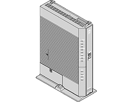

機能詳細説明
・
電話機能
・
ルータ機能
・
無線機能
・
WAN側機能
・
その他の機能
設定例
・
ブリッジモード
・
フレッツ関連
・
その他の設定例
Web設定
・
基本設定
・
電話設定
・
無線LAN設定
・
詳細設定
・
メンテナンス
・
情報
無線機能の使いかた
・
無線LANカードの使いかた
・
無線セキュリティ
・
「Web設定」で設定する
ひかり電話の使いかた
・
本商品に接続できる機器について
・
アナログ端末を接続するには
・
IP端末（音声）を接続するには
・
IP端末（通常）を接続するには
・
「Web設定」で設定する
・
電話機で設定する
その他（付録）
・
用語集
・
電話機からの設定一覧
このガイドでは、取扱説明書で触れていない「PR-400MI」の機能について解説しています。
本画面上部にあるお知りになりたい項目のボタンをクリックしてください。
お使いのWebブラウザによっては、Webブラウザ起動時にスクロールバーが動かないときがあります。
そのようなときには、Webブラウザの画面を広げたりしてみてください。
(C)2016 NTTEAST・NTTWEST
┃
お願い
┃
商標について
┃